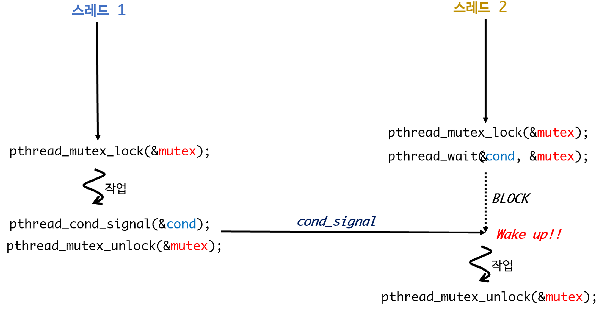
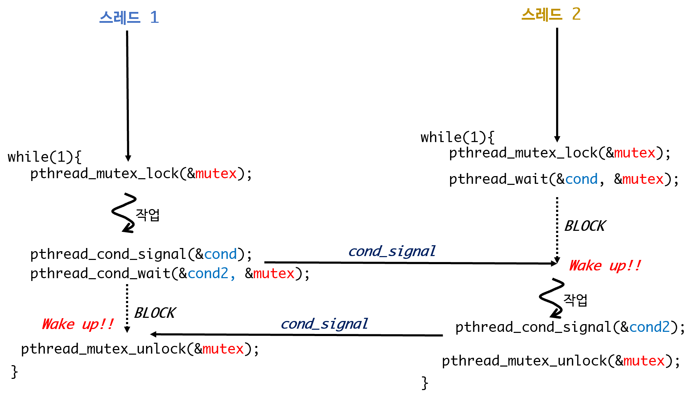
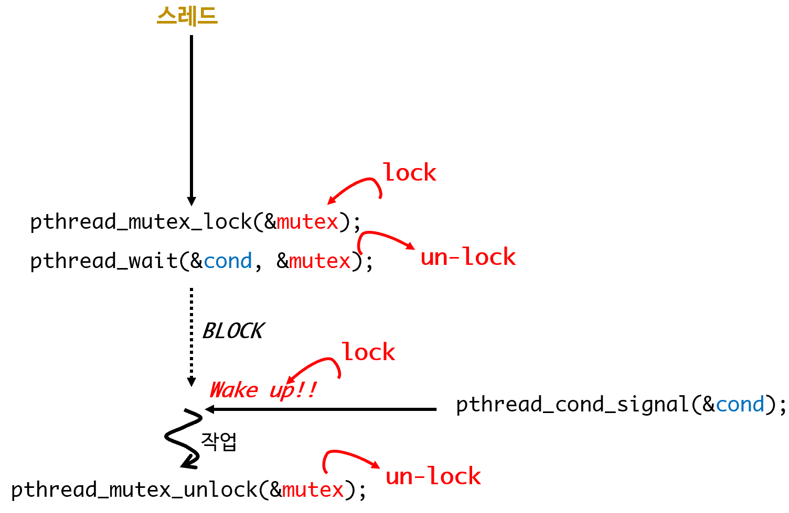
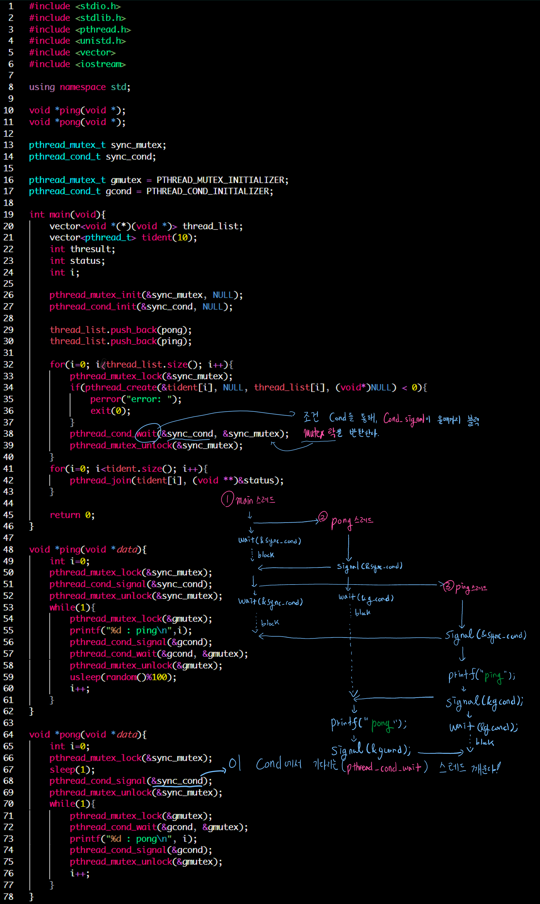

thread <2> cond 조건변수, attribute, signal, cancel
pthread API III: cond
cond
- 스레드가 3개있다고 가정한다.
- main 스레드
- 스레드 1, 2를 생성하고 join한다.
- 스레드 1
- 2개의 int형 멤버를 가진 구조체에 접근해 특정한 숫자를 입력
- 스레드 2
- 구조체에 접근해 멤버를 읽어와 “덧셈”하고 이를 화면에 출력한다.
- main 스레드
- critical section
- 스레드들이 동시에 접근하는 영역
- 구조체 영역: 스레드 1과 2가 접근하는 영역 -> Mutex 필요
- 스레드들이 동시에 접근하는 영역
- cond
- 스레드 2는 스레드 1에 의해 구조체의 값이 변경되는 것을 감지해야함
- 변경이 감지된 후 구조체에 접근해야함
- 변경될 때까지 기다려야한다.
- 이 “기다림”이 조건변수 cond 필요함
- cond은 마치 시그널을 주고 받는 것과 같다.
- 스레드 2는 스레드 1에 의해 구조체의 값이 변경되는 것을 감지해야함
- cond 사용의 이점
- cond를 사용하지 않으면, 스레드 2는 busy wait해야한다.

- 스레드 2 에서 wait로 BLOCK한걸 다른 스레드의 signal이 깨워줌!
"thread 1"
{
mutex lock 얻음
// 임계영역 시작 ===========================================
구조체에 접근해서 값 변경
pthread_cond_signal
// 임계영역 끝 =============================================
mutex unlock
}
"thread2"
{
mutex lock 얻음
// 임계영역 시작 ===========================================
pthread_cond_wait
if( cond_signal 왔다면){
구조체 값 더함
}
// 임계영역 끝 =============================================
mutex unlock
}
cond 주의사항
- 과연 신호가 실시간으로 전달 될 것을 신뢰할 수 있는가?
- 스레드 1이 스레드 2가 신호를 잘 받았는지 확인X 진행
- 스레드 1이 스레드 2가 신호를 잘 받았는지 확인X 진행
- 위 예제를 while文으로 돌리면 예상치 못한 결과가 발생
- 스레드 1이 빨리 한번 더 돌아 작업을 한번 더 한 뒤, 스레드 2가 작업할 수도 있음

- 스레드 1이 빨리 한번 더 돌아 작업을 한번 더 한 뒤, 스레드 2가 작업할 수도 있음
- 따라서
양방향으로 signal을 주고 받자
pthread_cond_init()
#include <pthread.h>
int pthread_cond_init(pthread_cont_t *cond, const pthread_cond_attr *attr);
- 기능: pthread_cond_init()은 조건 변수(condition variable)cond를 초기화하기 위해 사용한다.
- attr 을 이용해서 조건 변수의 특성을 변경할 수 있다.
- NULL을 주면, 기본특성으로 초기화한다.
- 조건 변수(condition variable)cond는 상수 PTHREAD_COND_INITIALIZER를 이용해서도 초기화할 수 있다.
#include <pthread.h>
pthread_cond_t cond = PTHREAD_COND_INITIALIZER;
// 둘 다 동일한 기능
pthrad_cond_init(&cond, NULL);
pthread_cond_signal()
#include <pthread.h>
int pthread_cond_signal(pthread_cont_t *cond);
- 기능: 조건 변수(condition variable) cond 에 시그널을 보낸다.
- 시그널을 보낼 경우 cond 에서 기다리는(wait) 스레드가 있다면 스레드를 깨운다.
- 여러 스레드가 기다리고 있다면 그 중 하나의 스레드에게만 전달되며 어떤 스레드에 신호가 전달될지 알 수 없다.
- cond 를 기다리는 스레드가 없다면, 아무 일도 일어나지 않는다.
- 시그널을 보낼 경우 cond 에서 기다리는(wait) 스레드가 있다면 스레드를 깨운다.
pthread_cond_broadcast()
#include <pthread.h>
int pthread_cond_broadcast(pthread_cont_t *cond);
- 기능: 조건 변수 cond 에서 기다리는(wait) 모든 스레드에게 시그널을 보내 깨운다.
pthread_cond_wait()
#include <pthread.h>
int pthread_cond_wait(pthread_cont_t *cond, pthread_mutex_t *mutex);
- 기능: 조건 변수 cond 를 통해 신호가 전달될 때까지 블럭된다.
- 신호가 전달되지 않으면, 영원히 블럭된다.
- pthread_cond_wait()는 블럭되기 전에 mutex잠금을 자동으로 돌려준다.
- 블럭에서 깨면 mutex 획득

pthread_cond_timedwait()
#include <pthread.h>
int pthread_cond_timedwait(pthread_cont_t *cond, pthread_mutex_t *mutex, const struct timespec *abstime);
- 기능: 조건 변수 cond 를 통해 신호가 전달될 때까지 블럭되고, 자동으로 Mutex를 돌려준다는 점에서 pthread_cond_wait()와 동일
- abstime시간 동안 신호가 도착하지 않는다면 error를 발생하면서 리턴
- ETIMEDOUT: errno가 아닌 리턴 값으로 에러가 넘어옴!
- pthread_cond_timedwait()함수는 다른 시그널에 의해 interrupted될 수 있으며(EINTR) 이 상황에 대한 처리 해야한다.
- abstime시간 동안 신호가 도착하지 않는다면 error를 발생하면서 리턴
pthread_cond_destroy()
#include <pthread.h>
int pthread_cond_destroy(pthread_cont_t *cond);
- 기능: pthread_cond_init()으로 생성된 조건 변수 cond 자원 해제
- pthread_cond_destroy() 함수를 호출하기 전에 어떤 스레드도 cond 에서의 시그널을 기다리지 않는 걸 확인해야 한다.
- cond 시그널 을 기다리는 스레드가 존재하면, 이 함수는 실패하고 EBUSY를 리턴한다.
cond example

- pong 스레드 실행 후 바로 wait
- ping 스레드 실행 후 "ping" 출력 후 signal 보내고 sleep
주의! pong 이 먼저 실행되야 하기 때문에, &sync_cond로 제어
pthread API IV: Attribute
pthread_attr_init():
#include <pthread.h>
int pthread_attr_init(pthread_attr_t *attr);
- pthread_attr_init은 attr 을 디폴트 값으로 초기화 시킨다.
- 성공 0, 실패 -1
pthread_attr_destroy():
#include <pthread.h>
int pthread_attr_destroy(pthread_attr_t *attr);
- attr 객체 제거
pthread_attr_getscope()
#include <pthread.h>
int pthread_attr_getscope(const pthread_attr_t *attr, int *scope);
- 스레드가 어떤 영역(scope)에서 다루어지고 있는지 얻어오기 위해 사용
- PTHREAD_SCOPE_SYSTEM: user 모드 스레드
- LINUX에서는 스레드 라이브러리를 통해 스케줄링하는 user 모드 스레드
- PTHREAD_SCOPE_PROCESS: kernel 모드 스레드
- Solaris에서는 커널 모드 스레드
- PTHREAD_SCOPE_SYSTEM: user 모드 스레드
#include <stdio.h>
#include <pthread.h>
int main(void){
pthread_attr_t pattr;
int scope;
pthread_attr_init(&pattr);
pthread_attr_getscope(&pattr, &scope);
if (scope == PTHREAD_SCOPE_SYSTEM)
printf("user mode thread\n")
else if (scope == PTHREAD_SCOPE_PROCESS)
printf("kernel mode thread\n");
return 0;
}
pthread_attr_setscope
#include <pthread.h>
int pthread_attr_setscope(pthread_attr_t *attr, int scope);
- 기능: 스레드가 어떤 영역(scope)에서 작동하게 할 것인지 결정
- LINUX는 user mode에서만 동작한다.
- Solaris는 둘다 선택 가능하다.
#include <stdio.h>
#include <stdlib.h>
#include <pthread.h>
int main(void){
pthread_attr_t pattr;
int scope;
pthread_attr_init(&pattr);
pthread_attr_setscope(&pattr, PTHREAD_SCOPE_PROCESS);
pthread_attr_getscope(&pattr, &scope);
if(scope == PTHREAD_SCOPE_SYSTEM)
printf("user mode thread\n");
else if(scope == PTHREAD_SCOPE_PROCESS)
printf("kernel mode thread\n");
return 0;
}
pthread_attr_getdetachstate
#include <pthread.h>
int pthread_attr_getdetachstate(pthread_attr_t *attr, int detachstate);
- 기능: 스레드가 join가능 한지, detached 상태인지 알아낸다. 알아낸 값은 detachstate에 저장된다.
- PTHREAD_CREATE_JOINABLE: (default), 스레드가 join 가능함
- PTHREAD_CREATE_DETACHED: 스레드가 pthread_detach를 이용해서 생성되었거나 혹은 pthread_attr_setdetachstate()함수를 이용해서 스레드를 detache 상태로 변경 시켰을 경우
#include <stdio.h>
#include <stdlib.h>
#include <pthread.h>
pthread_attr_t attr;
void *test(void *a){
int policy;
printf("Thread create\n");
pthread_attr_getdetachstate(&attr, &policy);
if(policy == PTHREAD_CREATE_JOINABLE)
printf("joinable\n");
else if (policy == PTHREAD_CREATE_DETACHED)
printf("detache\n");
}
int main(void){
int status;
pthread_t p_thread;
pthread_attr_init(&attr);
if(pthread_create(&p_thread, NULL, test, (void *)NULL)<0){
perror("pthread_create error: ");
exit(1);
}
pthread_join(p_thread, (void **)&status);
return 0;
}
pthread_attr_setdetachstate
#include <pthread.h>
int pthread_attr_setdetachstate(pthread_attr_t *attr, int detachstate);
- 기능: 스레드의 상태를 PTHREAD_CREATE_JOINABLE 혹은 PTHREAD_CREATE_DETACHED로 변경
...
pthread_attr_t attr;
"JOINABLE 상태로 변경"
pthread_attr_setdetachstate(&attr, PTHREAD_CREATE_JOINABLE);
"DETACHED 상태로 변경"
pthread_attr_setdetachstate(&attr, PTHREAD_CREATE_DETACHED);
pthread API V: signal
pthread_sigmask()
#include <pthread.h>
#include <signal.h>
int pthread_sigmask(int how, const sigset_t *newmask, sigset_t *oldmask);
- 기능: 스레드는 시그널 공유 따라서 프로세스에서 스레드로 시그널을 전달하면, 모든 스레드로 시그널이 전달된다.
- 특정 스레드만 시그널을 받도록 하고 싶을 때 사용한다.
pthread_kill()
#include <pthread.h>
#include <signal.h>
int pthread_kill(pthread_t thread, int signo);
- 기능: 스레드 식별 번호 thread 로 시그널 signo를 전달한다.
sigwait()
#include <pthread.h>
#include <signal.h>
int sigwait(const sigset_t *set, int* signo);
- 기능: set, signo
pthread API VI: cancel
pthread_cancel()
#include <pthread.h>
int pthread_cancel(pthread_t thread);
pthread_setcancelstate()
#include <pthread.h>
int pthread_setcancelstate(int state, int *oldstate);
pthread_setcanceltype()
#include <pthread.h>
int pthread_setcanceltype(int type, int *oldtype);
pthread_testcancel()
#include <pthread.h>
void pthread_testcancel(void);